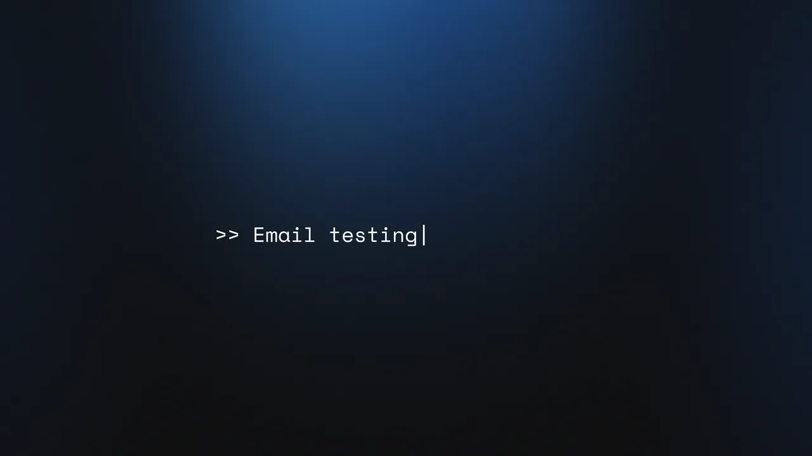

Seven beats in 53 seconds, each with the reason it’s there.

0:00.0The film opens on a prompt, >> Email testing, set in mono. Developers spend their day in lines like that, so there’s nothing to sell yet and nothing to explain.
Terminal windows stack up with real SMTP errors, then a DNS lookup that fails. Anyone who has tested email has seen them. The red light arrives with them, and red stays reserved for friction from here on.
Red · friction onlyA code comment answers back: // Yeah, it’s a pain. Then the stakes, in plain words: you need to test one signup email, and the setup clock keeps counting up until it turns red.
The frame opens, red gives way to blue, and the smtp.dev mark lands in the middle of the sentence: but you ✓ can just. Then the mark opens into the app itself.
Blue · the product arrivesI rebuilt smtp.dev’s UI in Illustrator, piece by piece, and animated it in After Effects: add a domain, update MX records, create an account, then That’s it. Start testing. No captions on top. A title like Update MX records arrives on its own, then becomes the dialog it names.
Four steps · told by the UIWorks with any client. Unlimited domains. Unlimited accounts. Not SendGrid. Not SES. Just testing. One claim per cut, carried by speed lines, with one more visit to the terminal to say plainly what’s open and what’s blocked.
Speed lines · one claim per cutThe line Simple. Clear. No surprises. fades out and the check comes back as the logo. The wordmark types itself in, the way the film began, and the tagline follows: Email testing that just works.
The check closes the loop